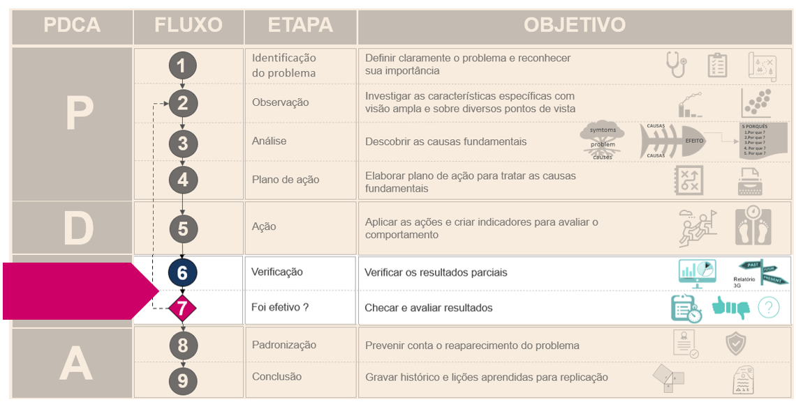
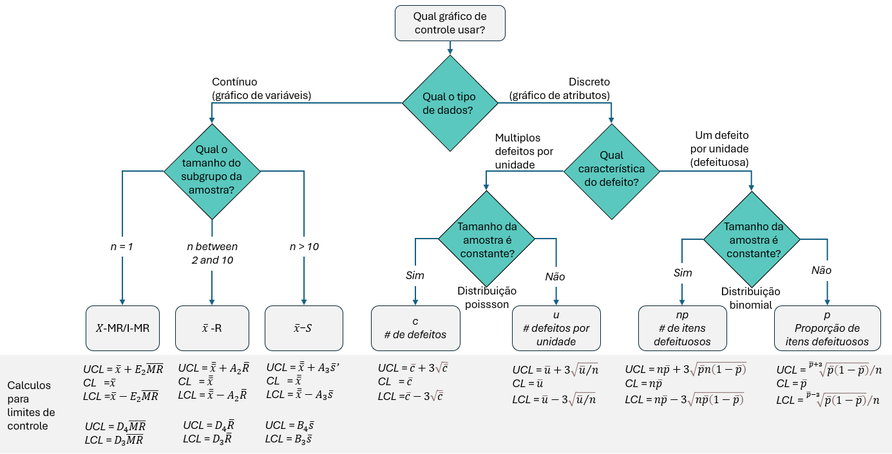

11 Gráfico de controle
O que é
O gráfico de controle é uma ferramenta útil para avaliar o comportamento de um processo e servir como baes para previsões.
O gráfico mostra algumas características fundamentais que descrevem um processo como:
- Centralização que é determinada pela média.
- Dispersão, que representa o desvio-padrão ou amplitude
- Limites de controle (LC) ou em inglês CL que significa control limits.
Imagine um experimento onde o objetivo é medir o tempo médio gasto para fatiar tomates com a mesma espessura. Para isso, eu pego uma amostra de 100 tomates, meço o tempo gasto para fatiar cada tomate. O tempo médio gasto para fatiar cada tomate será representada pela linha central enquanto o limite superior e inferior de controle terão três desvios padrão dessa média.
E por que +/- 3 desvios padrão da média?
A resposta é que considerando a distribuição normal de probabilidades, 99.7% dos dados estão variando em até 3 desvios padrão da média. Neste caso, qualquer variação dentro desses limites é considerando dentro do normal. Um valor comum de três desvios padrão pode ser justificado pelos bons resultados obtidos na prática, com o nível de confiança estabelecido de 99,74% na análise dos dados (BRASSARD, 1994)

Deming, Cahill, and Allan (2018), descreve que Shewhart em 1924, descobriu duas formas de variações em um processo as quais ele classificou como causas comuns e causas especiais e como os processos sujeitos a variação de causas especiais eram imprevisíveis, as técnicas de probabilidade não poderiam ser usadas para separar um tipo de variação de outra e por isso, ele criou um gráfico de controle estatístico como uma heurística para distinguir esses dois tipos de variação, pois cada tipo necessita tratamentos diferentes.
Causa comum
Fenômenos constantemente observados, ativos no sistema.
Variações previsíveis probabilisticamente e quantificáveis.
Falta significância nos valores individuais seja pra cima ou pra abaixo da média.
Exemplos(falta de manutenção de maquinas, falta de procedimento operacional padrão ou inadequados, materias primas de qualidade ruim, iluminação ruim, sujeira ou ruídos excessivos, problemas no design).
Causa especial
Fenômenos imprevistos, emergentes.
Variação imprevisível e não quantificáveis.
Variação fora da faixa histórica
Presença de significância que evidencia alguma mudança ou percepção no sistema.
Exemplos (Pane no servidor, falta de operador da maquina, quebra da maquina, lote diferente na matéria prima, falta ou oscilações na energia eletrica, controladores defeituosos)
Pode ser corrigida alterando o componente ou processo.
Em algumas situações particulares, os limites de controle poderão ser ajustados, por exemplo, aumentar o limite para quando os custos de investigação das causas forem muito grandes e reduzir para quando as análises das possíveis causas do surgimento de fatores especiais de variação forem simples, consumirem o mínimo de tempo, e em situações em que o custo de produção de artigos defeituosos for alto (DEMING, 2003).
Os gráficos de controle são divididos em dois grupos sendo o controle por variáveis e por atributos.
Por variáveis ou valor contínuo
- É formado por dados quantitativos (variável contínua).
- É utilizado quando as amostras são expressas em unidades quantitativas de medida tais como comprimento(12,3 cm), largura(10 mm), peso(12,7 kgs), tempo (2,9 horas) entre outras.
- O mais comum é o Xbarra-R que significa média e amplitude das amostras de cada grupo (VIEIRA e WADA,1992)
Por atributos ou valor discreto
- É formado por dados qualitativos (variáveis discreta e categóricas).
- É utilizado quando as amostras refletem características qualitativas como defeituoso(SIM ou NÃO), passa ou não passa(0 ou 1), unidades contáveis(12 furos no tecido) entre outros.
- Para esse tipo de controle é comumente utilizado o gráfico P, NP, C e U.
- Os gráficos de controle por atributos são utilizados geralmente quando a medição da característica é inviável, antieconômica ou há conveniência em transformar uma variável em atributo; no entanto, é importante acrescentar que uma variável transmite mais informação do que atributos (BRASSARD, 1994).
| Tipo de valor | Nome do gráfico |
|---|---|
| Contínuo | Gráfico \(\bar{x}\) - \(R\) ou gráfico média e amplitude |
| Contínuo | Gráfico \(x\) ou gráfico de valor individual |
| Discreto | Gráfico \(NP\) ou gráfico de número de defeitos |
| Discreto | Gráfico \(p\) ou gráfico de fração defeituosa |
| Discreto | Gráfico \(c\) ou gráfico de número de defeitos |
| Discreto | Gráfico \(u\) ou gráfico de número de defeitos por unidade |
A linha inferior de controle não pode ser menor que zero.
Qual o objetivo
Fornecer para o gestor informações sobre o comportamento do processo.
Facilitar a realização de análises, ações ou ajustes nos casos em que os processos apresentarem comportamentos considerados fora do padrão normal aleatório.
De onde vem
Necessidade de monitoramento e avaliação de um processo. De acordo com Deming, Cahill, and Allan (2018), não se melhora a qualidade através da inspeção pois o defeito já vem com o produto quando ele deixa a maquina antes de inspecioná-lo. É importante avaliar o defeito no momento em que ele está acontecendo ou está prestes a acontecer, nisso o gráfico de controle pode ser uma ferramenta útil.
Necessidade de ferramenta versátil, que possibilite visualizar e identificar vários tipos de comportamentos como pontos fora do controle, formação de tendências ou padrões repetidos.
Verificar resultados parciais as ações em andamento e checar resultados.

Como fazer
- A
- B
- Montgomery, 2009 regras para reconhecimento de padrões não aleatórios que indicam se o processo pode estar fora de controle.
- Regra1 Qualquer ponto fora do limite de 3 da linha central seja pra cima ou pra baixo
- Regra 2 Dois em cada 3 pontos consectivos fora do limite de 2 sigmas
- Regra 3 Quatro em cadas cinco pontos consectivos fora do limite de 1 sigma do mesmo lado da linha central.
- Regra 4 Oito pontos consectivos do mesmo lado da linha central.
A escolha do gráfico mais adequado para cada situação e calculo de limites de controle
 Onde: D3, D4 e E3 são constantes para gráfico de controle.
Pra onde vai
- Após o monitoramento e avaliação das ações, a próxima etapa é a padronização para que o procedimento possa ser replicado para os demais processos semelhantes.
Qual o resultado
Melhoria na avaliação das ações que estão sendo executadas através da identificação de comportamento do processo.
Melhoria do equilibrio no ambiente e do trabalho da equipe pois permite tomar ações preventivas e preditivas minimizando as pressões e stress durante a solução de um problema.
Melhoria da qualidade e sustentabilidade nas relações no longo prazo. Por exemplo um produto uniforme terá menos defeitos, com menos defeitos durará mais, durando mais o consumidor fica satisfeito, o consumidor ficando satisfeito ele recomenda o produto e novos consumidores comparão o produto.